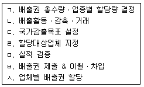
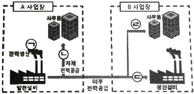
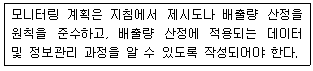
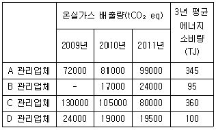
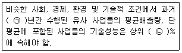

온실가스관리기사 (2016-05-08 기출문제)
1과목: 기후변화개론
1. 온실가스에 관한 내용 중 옳지 않은 것은?
- 전 세계 온실기체 배출량을 대상으로 부문별 배출량 비율은 보면 에너지 부문의 배출량이 가장 많은 비중을 차지하고 있다.
- 온실 기체 중 아산질소의 지구온난화지수와 배출비중은 이산화탄소보다 높다.
- 수송부문 중 항공운송과 해양운송에 대한 온실기체 배출량 증가추세를 보인다.
- 농업부문에서 주로 배출되는 온실기체는 메탄과 아산화질소이다.
(정답률: 94%)

2. 온실가스의 지구온난화 지수가 높은 순서대로 나열된 것은?
- 육불화황＞아산화질소＞메탄＞과불화탄소
- 육불화황＞메탄＞과불화탄소＞아산화질소
- 육불화황＞아산화질소＞과불화탄소＞메탄
- 육불화황＞과불화탄소＞아산화질소＞메탄
(정답률: 100%)
3. 기후변화 관련 국제협약에 대한 설면 중 옳지 않은 것은?
- 기후변화협약 2차 당사국 총회에서는 감축목표에 대한 법적 구속력 부여에 합의하였다.
- 독일에서 개최된 6차 당사국 총회에서는 미국 및 중국 등 주요 온실가스 배출 국가를 포함한 교토의정서 체계에 합의하였다.
- 2001년 7차 당사국총회에서 교토메커니즘 관련 사업의 추진기반을 마련하였다.
- 3차 당사국 총회에서 교토메커니즘이 채택되었다.
(정답률: 59%)
4. IPCC 온실가스 시나이로 중에서 인간 활동에 의한 영향을 지구 스스로 회복 가능한 시나리오는?
- RCP 2.6
- RCP 4.5
- RCP 6.0
- RCP 8.5
(정답률: 74%)
5. 국내 기후변화 적응대책의 10가지 분야에 해당되지 않는 것은?
- 교통
- 건강
- 수자원
- 재난 재해
(정답률: 48%)
6. 기후변화협약의 모든 당사국이 이행해야 할 사항과 거리가 먼 것은?
- 모든 온실가스의 배출원에 의한 인위적 배출과 흡수원에 의한 제거에 대한 국가통계를 작성하고 당사국총회에 통보한다.
- 기후변화의 부정적 효과에 특히 취약한 개발도상국이 이에 적응하는 데 소요되는 비용을 지원한다.
- 기후변화의 완화조치와 적절한 대응계획을 세루고 정기적으로 갱신한다.
- 기후변화와 관련된 과학적, 기술적, 사회경제적, 법률적 정보의 포괄적이고 신속한 교환을 도모하고 이에 협력한다.
(정답률: 80%)
7. 이동오염원의 탄소배출량 저감방법으로 가장 거리가 먼 것은?
- 바이오연료 사용
- 에코드라이빙 교육
- 공기역학기술 적용차량 보급
- 단거리 물류운송차량의 대형화
(정답률: 100%)
8. 우리나라가 유엔기후변화협약(UNFCCC)에 가입한 연도와 교토의정서를 비준한 연도가 알맞게 짝지어진 것은?
- 1992년, 1998년
- 1993년, 2002년
- 1995년, 20⑤년
- 1997년, 2008년
(정답률: 65%)
9. 기후변화감시요소와 세계자료센터가 있는 국가가 잘못 짝지어진 것은?
- 온실가스-이탈리아
- 성층권 오존 및 자외선-캐나다
- 태양복사-러시아
- 강수화학-미국
(정답률: 64%)
10. 온실가스의 하나인 CH4의 발생원으로 옳지 않은 것은?
- 이탄습지
- 쓰레기 매립지
- 소나 흰개미의 내장
- 통기성이 원활한 토양
(정답률: 93%)
11. 국내 온실가스 배출권 거래제 운영절차를 바르게 나열한 것은?

- ㄷ→ㄱ→ㄹ→ㅅ→ㄴ→ㅁ→ㅂ
- ㄷ→ㄱ→ㄹ→ㅅ→ㄴ→ㅂ→ㅁ
- ㄱ→ㄷ→ㄹ→ㅅ→ㄴ→ㅁ→ㅂ
- ㄱ→ㄷ→ㄹ→ㅅ→ㄴ→ㅂ→ㅁ
(정답률: 72%)
12. 극지방의 빙하가 녹게 되면 눈과 얼음에 덮여 있던 육지와 수면이 드러나 지구 표면의 온도 상승을 가속화시키게 되는데 그 이유로 가장 옳은 것은?
- 해수면을 상승시키기 때문에
- 빙하가 융해될 때 잠열이 발생하기 때문에
- 지구의 알베도(Albedo)를 증가시키기 때문에
- 지구의 알베도(Albedo)를 감소시키기 때문에
(정답률: 74%)
13. 기후변화협약 당사국총회의 주요내용에 대한 설명이 가장 적합한 것은?
- COP7(미라케시) : 교토메카니즘, 의무준수체계, 흡수원 등에 대한 합의
- COP13(발리) : 지구온도 2℃ 상승억제 재확인 및 2⑤0년까지 장기 감축목표에 노력
- COP15(코펜하겐) : 선진국과 개도국이 모두 참여하는 새로운 기후변화 체제 마련에 합의
- COP18(도하) : 교토의정서를 2022년까지 연장합의
(정답률: 54%)
14. 교토의정서에 규정되어 있는 사항으로서 선진국 A국이 개도국 B국에 투자하여 발생된 온실가스 배출 감축분을 자국의 감축실적에 반영할 수 있도록 하는 제도는?
- 공동이행제도
- 청정개발체제
- 배출권거래제도
- 재정 및 기술이전제도
(정답률: 58%)
15. 기후변화 정부간 패널(IPCC)의 기후변화보고서 발표년도가 잘못 짝지어진 것은?
- 제1차 보고서 : 1990년
- 제2차 보고서 : 1995년
- 제3차 보고서 : 2000년
- 제4차 보고서 : 2007년
(정답률: 67%)
16. 기후변화로 인한 한반도의 환경적 영향과 가장 거리가 먼 것은?
- 폐기물의 증가
- 생물 다양성 감소
- 농수산물 생산 변화
- 집중호우 등의 자연재해
(정답률: 100%)
17. 교토의정서에 대한 내용 중 옳지 않은 것은?
- 제3차 당사국총회에서 부속서1 국가들의 온실가스 배출량 감축을 골자로 채택하였다.
- 부속서1 국가들은 2010~2012년까지 1990년 대비 평균 2.2% 감축하기로 했다.
- 배출권거래제, 공동이행, 청정개발체제 등 시장원리를 도입하였다.
- 20⑤년 2월 16일에 공식 발효되었다.
(정답률: 70%)
18. 우리나라가 2011년에 세계표준센터를 유치한 온실가스는?
- 이산화탄소
- 메탄
- 아산화질소
- 육불화황
(정답률: 83%)
19. 배출권 거래제도에 관한 설명 중 옳지 않은 것은?
- 배출권 거래제도는 시장원리에 기반한 제도이다.
- 배출권 거래제도는 자발적인 제도로서 의무를 수반하지 않는다.
- 배출권 거래제도는 배출총량이 고정되어 있다.
- 배출권 거래제도의 운영에는 일정 수준의 거래비용이 발생한다.
(정답률: 50%)
20. IPCC 가이드라인에서 이동오염원에서 직접 배출되는 온실가스이나 비에너지 온실가스로 구분되어 이동오염원 온실가스 배출량 통계로 집계되지 않는 물질로 옳은 것은?
- CO2
- CH4
- HFCs
- N2O
(정답률: 59%)
2과목: 온실가스 배출의 이해
21. 보기에서 온실가스 배출량 산정이 제외되는 경우는?

- ㉠
- ㉡
- ㉢
- ㉣
(정답률: 95%)
22. 습지에서의 온실가스 배출량 산정 시 고려하지 않아도 되는 것은?
- 온실가스 배출이 안정화되는 기간
- 습지가 결정되거나 해빙된 일수
- 자연적으로 생성된 습지 면적
- 인공적으로 생성된 습지 면적
(정답률: 65%)
23. 외부에서 공급된 전기사용량에 대한 온실가스 중 보고대상의 조합이 올바른 것은?
- CO2만
- CO2, CH4만
- N2O만
- CO2, CH4, N2O만
(정답률: 77%)
24. 다음 배출 시설 중 철강생산 공정배출 시설과 가장 거리가 먼 배출시설은? (단, 온실가스 에너지 목표 관리 운영 등에 관한 지침 기준)
- 코크스로
- 가열로
- 고로
- 전로
(정답률: 69%)
25. 철강 생산시설에서 배출되는 보고대상 온실가스가 옳게 짝지어진 것은?
- CO2, HFCs
- CO2, NO2
- CO2, CH4
- CH4, NO2
(정답률: 59%)
26. 우리나라 건축물의 온실가스 배출 벤치마크 계수 개발 시 적용되는 배출량의 범위로 맞는 것은?
- 간접배출만 반영
- 직접배출만 반영
- 간접 및 직접배출 모두 반영
- 건축물의 용도에 따라 다름
(정답률: 86%)
27. 광물 산업의 에너지 사용 대표 시설인 소성시설(킬른)의 에너지 소비 효율 증대 활동과 가장 거리가 먼 것은? (단, 온실가스ㆍ에너지 목표 관리 운영 등에 관한 지침 기준)
- 소설시설에서 배출되는 여열을 회수하여 킬른에 공급한다.
- 석회석을 건조시키기 위해 킬른이 여열을 사용한다.
- 장형 로타리 킬른을 최대한 길게한다.
- 샤프트 킬른을 에뉼라 샤프트형으로 설계 변경한다.
(정답률: 80%)
28. 이동연소 도로 부분의 온실가스 배출량 산정시 필요한 자료가 아닌 것은?
- 연료 순발열량
- 연료 생산지
- 연료 소비량
- 연료의 배출계수
(정답률: 100%)
29. 철강생산 시설의 일관제철공정 온실가스 배출량 산정에 필요한 자료가 아닌 것은?
- 연료 및 원료의 탄소 함량
- 공정의 산소 주입량
- 생산되는 제품의 탄소함량
- 제품의 생산량
(정답률: 80%)
30. 휘발유 215L, 등유 750L, 경유 654L의 에너지 환산량의 합을 TJ로 계산한 값은? (단, 총발열계수는 휘발유 33.5MJ/L, 등유 37.5MJ/L, 경유 37.9MJ/L이며, 단위는 TJ로 하고 소수점 넷째자리에서 반올림하여 계산한다.
- 6.0100
- 0.6010
- 0.0601
- 0.0060
(정답률: 82%)
31. 하ㆍ폐수 처리시설 중 혐기성 조화조의 소화효율을 개선하는 방법으로 옳은 것은?
- 낮은 유기물 함량 유지
- 소화조 내 운전온도를 25℃미만으로 유지
- 합류식 하수도를 활용한 모래 및 흙의 동시 유입
- 식종 미생물의 유출을 최소화
(정답률: 67%)
32. 자동차 온실가스 배출저감 기술에 관한 설명으로 옳지 않은 것은?
- 에어컨 구조변경과 냉매를 변경함으로써 온실가스 배출을 줄일 수 있다.
- 배기관에 후처리장치를 부착함으로써 온실가스 배출을 줄일 수 있다.
- 자동차의 중량을 감소시킴으로써 온실가스 배출을 줄일 수 있다.
- Concentional 가솔린엔진은 높은 압축 비율을 가진 디젤 압축-점화엔진과 비교할 때 온실가스 배출이 많다.
(정답률: 78%)
33. 증기보일러에서 스팀을 생산하는데 에너지 저감 및 온실가스를 감축하기 위해 다양한 기술이 적용될 수 있다. 다음 중 에너지 저감 또는 온실가스 감축에 가장 효과가 적은 것은? (단, 온실가스ㆍ에너지 목표 관리 운영 등에 관한 지침 기준)
- 공업용수를 보일러 급수로 100% 이용
- 탈기 공급수의 이용
- 공정 등에서 발생되는 폐열의 이용
- 이코노마이저의 이용
(정답률: 58%)
34. 도로 차량의 종류를 설명한 것 중 옳지 않은 것은? (단, 온실가스ㆍ에너지 목표 관리 운영 등에 관한 지침 기준)
- 승용자동차, 소형-배기량이 1600cc 미만인 것
- 화물자동차, 경형-배기량이 1000cc 미만인 것
- 특수자동차, 대형-최대적재량이 5톤 이상인 것
- 이륜자동차, 중형-배기량이 100cc 초과 260cc 미만인 것
(정답률: 65%)
35. 폐기물 소각시설에서 온실가스 배출량을 줄이는 방법으로 틀린 것은?
- 배가스 처리
- 에너지 회수 증가
- 에너지 공급 효율성 증가
- 플라스틱 등 고열량 폐기물 투입
(정답률: 94%)
36. 제품의 생산 공정 및 제품사용에 따른 온실가스 배출 활동에 포함되지 않는 것은?
- 석유정제활동
- 철강생산
- 석탄의 채굴
- 오존층파괴물질의 대체물질 사용
(정답률: 75%)
37. 고정연소에 의한 배출시설이 아닌 것은? (단, 온실가스ㆍ에너지 목표 관리 운영 등에 관한 지침 기준)
- 화력발전시설
- 열병합발전시설
- 소성시설
- 일반보일러시설
(정답률: 70%)
38. 석유정제공정의 보고대상 배출시설이 아닌 것은?
- 카본블랙 반응시설
- 수소제조시설
- 촉매재생시설
- 코크스 제조시설
(정답률: 75%)
39. 증류의 원리에 의해서 원유를 가열, 냉각 및 응축과 같은 물리적 변화 과정을 통하여 일정한 범위의 비점을 가진 석유 유분을 분리시키는 공정은?
- 상압증류공정
- 메록스공정
- 가스회수공정
- 접촉개질공정
(정답률: 90%)
40. 반도체 및 기타 전자부품 제조시설에서 온실가스 공정배출시설이 옳게 짝지어진 것은?
- 식각시설, 증착시설
- 시각시설, 결정성장로
- 결정성장로, 증착시설
- 웨이퍼 세정시설, 잉곳 절단 시설
(정답률: 92%)
3과목: 온실가스 산정과 데이터 품질관리
41. 기록과 문서의 정확성을 판단하기 위하여 검증심사원이 직접 계산하고 확인하는 검증기법은 무엇인가?
- 재계산
- 분석
- 역추적
- 열람
(정답률: 80%)
42. 온실가스ㆍ에너지 목표 관리 운영 등에 관한 지침 중 품질관리 활동의 4가지 내용으로 옳지 않은 것은?
- 기초자료의 수집 및 정리
- 불확도 산정 결과
- 산정 결과의 적절성
- 보고의 적절성
(정답률: 50%)
43. 온실가스ㆍ에너지 목표 관리 운영 등에 관한 지침 상 상대정확도 시험에 대한 설명 중 옳은 것은?
- 관리업체의 측정기기 또는 데이터 수집기간의 통신상태 및 댁시분야 환경오염공정시험기준에 적합한지 여부를 확인하는 시험이다.
- 측정자료 간의 오차율을 비교하여 정확성을 확인하는 시험으로 대기분야 환경오염 공정시험기준에 따라 적합한지 여부를 확인하는 시험이다.
- 측정기기의 설치위치, 환경조건, 기능, 성능 등이 대기분야 환경오염 공정시험기준에 적합한지를 확인하는 시험이다.
- 상대정확도 시험은 확인검사와 통합시험으로 구분할 수 있다.
(정답률: 85%)
44. 모니터링 계획의 작성 원칙 중 다음 설명이 말하는 것은?

- 완전성
- 투명성
- 일관성
- 일치성
(정답률: 91%)
45. 온실가스 배출량을 산정하기 위해 필요한 요소 중 활동자료가 아닌 것은?
- 연소된 연료의 양
- 연료의 산화율
- 사육된 가축두수
- 퇴비화된 음식물폐기물 양
(정답률: 56%)
46. 온실가스ㆍ에너지 목표 관리 운영 등에 관한 지침 상 굴뚝연속자동측정기에 의한 배출량 산정시 CO2 농도는 어떤 자료를 사용하는가?
- 5분 평균농도
- 10분 평균농도
- 30분 평균농도
- 1시간 평균농도
(정답률: 92%)
47. 온실가스 배출량을 지속적으로 모니터링하기 위하여 계획서를 작성하려고 할 때, 모니터링 계획서에 포함되지 않아도 되는 사항은?
- 배출시설별 모니터링 방법
- 배출시설별 황동자료의 측정 지점
- 배출활동별 매개변수 산정등급
- 측정기기의 구입처 및 가격
(정답률: 86%)
48. 온실가스ㆍ에너지 목표 관리 운영 등에 관한 지침 상 검증기관 지정요건으로 옳지 않은 것은?
- 검증기관은 법이어야 한다.
- 상근심사원은 3인 이상 갖추어야 한다.
- 검증 매뉴얼은 문서형태로 작성되어야 한다.
- 검증기관은 검증절차에 필요한 세부 운영메뉴얼을 구비하여야 한다.
(정답률: 87%)
49. 철강생산 공정 중 온실가스의 직접배출(scope1)이 일어나지 않은 공정은?
- 연주공정
- 고로공정
- 제강공정
- 소결공정
(정답률: 50%)
50. 다음 중 폐기물부문 보고대상 온실가스가 아닌 것은?
- 매립에 의한 메탄
- 하수처리과정 중 유기물 분해에 따른 메탄
- 바이오매스의 소각에 의한 이상화탄소
- 폐수처리과정 중 유기물 분해에 따른 메탄
(정답률: 63%)
51. 온실가스ㆍ에너지 목표 관리 운영 등에 관한 지침에서 정하는 바에 따라 고형폐기물의 매립 시 배출량 산정과 관련한 매개변수별 관리기준에 대한 설명 중 옳지 않은 것은?
- 폐기물 성상별 매립양은 1981년 1월 1일 이후 매립된 폐기물에 대해서만 수집한다.
- 메탄 회수량은 측정불확도 ±2.5% 이내의 메탄 회수량 자료를 활용한다.
- 메탄으로 전환 가능한 DOC비율은 IPCC 가이드라인 기본값인 0.5를 적용한다.
- 메탄 부피비는 IPCC 기본값인 0.5를 적용한다.
(정답률: 70%)
52. 온실가스ㆍ에너지 목표 관리 운영 등에 관한 지침에 따른 배출량 등의 산정ㆍ보고 절차에 대한 설명 중 옳지 않은 것은?
- 조직경계는 건축법 등 관련 법률에 따라 정부에 허가받거나 신고한 문서 등을 이용하여 사업장의 부지경계를 식별한다.
- 보고대상 활동의 파악 시 활용 가능한 자료는 공정의 설계자료, 설비의 목록, 연료 등의 구매전표 등이다.
- 배출량 등의 제3자 검증은 산업통상자원부 장관이 지정고시한 검증기관을 활용하여 제3자 검증을 실시한다.
- 관리업체는 제3자 검증 후 매년 3월 31일까지 명세서와 검증보고서를 부문별 관장기관에게 제출한다.
(정답률: 75%)
53. 온실가스ㆍ에너지 목표 관리 운영 등에 관한 지침에 따른 용어의 정의가 옳지 않은 것은?
- "기준연도“란 온실가스 배출량 등의 관련정보를 비교하기 위해 지정한 과정의 특정기간에 해당하는 연도를 말한다.
- “불확도”란 온실가스 배출량 등의 산정결과와 관련하여 정량화된 양을 합리적으로 추정한 값의 분산특성을 나타내는 정도를 말한다.
- “공정배출”이란 제품의 생산 공정에서 원료의 물리ㆍ화학적 반응 등에 따라 발생하는 온실가스의 배출량을 말한다.
- “순발열량”이란 일정단위의 연료가 완전 연소되어 생기는 열량으로서 에너지사용량 산정에 활용된다.
(정답률: 94%)
54. 배출량 산정등급에서 국가고유 배출계수 및 발열량 등 일정부분 시험분석을 통하여 개발한 매개변수 값을 활용하는 배출량 산정방법론은?
- Tier 1
- Tier 2
- Tier 3
- Tier 4
(정답률: 93%)
55. 외부 열 및 증기를 사용하여 온실가스 간접배출시 배출량 산정기준에 대한 설명 중 틀린 것은?
- 시설규모 B그룹일 경우 산정방법론을 Tier1을 적용한다.
- 시설규모 A그룹일 경우 외부에너지사용량은 Tier2를 적용한다.
- 시설규모 B그룹일 경우 간접배출계수는 Tier3을 적용한다.
- 시설규모 C그룹일 경우 외부에너지 사용량은 Tier3을 적용한다.
(정답률: 31%)
56. 온실가스 측정 불확도 산정절차로 옳은 것은?
- 사전검토→합성불확도 산정→불확도 산정→배출량 불확도 계산
- 사전검토→불확도 산정→합성불확도 산정→배출량 불확도 계산
- 사전검토→배출량 불확도 계산→불확도 산정→합성불확도 산정
- 불확도 산정→사전검토→합성불확도 산정→배출량 불확도 계산
(정답률: 79%)
57. 온실가스ㆍ에너지 목표 관리 운영 등에 관한 지침 상 시멘트 생산에서의 온실가스 배출특성이 아닌 것은?
- 소성 공정에서 탄산칼슘의 탈탄산 반응에 의한 CO2가 배출된다.
- 목재와 같은 바이오매스 연료는 배출량 산정 시 제외한다.
- 소성되지 못한 비산먼지를 고려하지 않을 경우 배출량이 과다 산정된다.
- 분쇄한 석회석을 클링커에 추가할 경우 추가적인 CO2를 고려해야 한다.
(정답률: 47%)
58. 산정된 개별 온실가스의 배출량은 지구온난화지수를 이용하여 합산된다. 디음 중 다양한 온실가스의 총 배출량을 나타내는 단위로 가장 적절한 것은?
- tC
- TOE
- tCO2
- tCO2-eq
(정답률: 91%)
59. 온실가스ㆍ에너지 목표 관리 운영 등에 관한 지침 상 연속자동측정방법에 따른 이산화탄소 측정기기 검사항목 기준으로 틀린 것은?
- 교정오차 5% 이하
- 상대정확도 20% 이하
- 영점편차(2시간) 0.4%이하
- 교정편차(2시간) 0.4%이하
(정답률: 71%)
60. 폐기물 매립시설에서 CH4 발열량이 1000 tCO2-eq/yr, CH4 회수량이 800 tCO2-eq/yr일 경우 CH4의 배출량은?(오류 신고가 접수된 문제입니다. 반드시 정답과 해설을 확인하시기 바랍니다.)
- 약 200 tCO2-eq/yr
- 약 267 tCO2-eq/yr
- 약 300 tCO2-eq/yr
- 약 367 tCO2-eq/yr
(정답률: 40%)
4과목: 온실가스 감축관리
61. 기후변화협약 교토의정서의 의거한 청정개발체제(CDM)사업으로 등록하려는 사업에 대해 UNFCC에 승인된 방법론이 없는 경우 신규 방법론을 개발하여야 한다. 신규 방법론 개발 과정에 대한 내용 중 틀린 것은?
- 신규 방법론을 제안할 때에는 사업계획서와 같이 CDM 집행위원회에서 제시한 형식에 맞추어 신규 방법론 제안서(CDM-NM)을 작성하여야 한다.
- 승인 소규모 방법론의 개정사항은 개정일 후 등록된 사업활동에만 적용한다.
- 신규 방법론 제안서와 사업계획서 초안, 신규 방법론 등록비를 UNFCCC사무국에 제출한다.
- 최초 사업 참여자의 신규 방법론 등록비는 면제된다.
(정답률: 69%)
62. 수소에너지의 장ㆍ단점에 대한 설명으로 틀린 것은?
- 수소는 물을 원료로 할 수 있다.
- 수소에너지는 사용 후에 다시 물로 재순환된다.
- 수소는 물의 전기분해로 쉽게 자조가 가능하여 경제성이 높은 것이 특징이다.
- 수소를 연료로 사용할 경우, NOx를 제외하고는 공해물질이 거의 생성되지 않는다.
(정답률: 67%)
63. 다음 중 온실가스 조기감축 실적의 인정 예외 사유에 해당하지 않는 것은?
- 관리업체가 법적 규제ㆍ기준을 충족하기 위하여 실시한 사업의 결과의 수반하여 온실가스 배출량이 감소된 경우
- 관리업체의 일반적 경영여건을 넘는 추가적 행동에 의해 온실가스 배출량이 감소된 경우
- 관리업체의 생산량이 감소하거나 조직경계 내 배출시설의 폐쇄 등으로 인하여 온실가스 배출량이 감소된 경우
- 관리업체 내 온실가스 배출시설을 조직경계 외부 또는 외국으로 이전하여 온실가스 배출량이 감소된 경우
(정답률: 67%)
64. 온실가스 감축을 위한 공정개선에 있어, 건문분야와 관련된 감축기술과 거리가 먼 것은?
- 스마트 창호를 사용하여 빛의 투과량을 조절하는 기술
- 공조시스템을 개선하여 냉난방 부하를 감축하는 기술
- 바이오를 이용한 화합물 및 이산화탄소를 원료로 하는 플라스틱 제조기술
- 전등을 LED로 교체하여 전기를 절약하는 기술
(정답률: 82%)
65. 연료를 대체하여 온실가스를 감축하기 위한 기술로 적합한 것은?
- 보일러에서 사용하는 연료를 B-C유에서 LNG로 대체한다.
- 발전소 증기터빈 보일러에 사용하는 연료를 등유에서 무연탄으로 대체한다.
- 스팀보일러의 연료로 사용하는 우드칩과 폐목을 LNG로 대체한다.
- 공장의 LNG보일러를 경유보일러로 대체한다.
(정답률: 93%)
66. 다음 중 2012년 관리업체 지정목록 작성 시 관리업체로 지정되지 않은 경우는?

- A 관리업체
- B 관리업체
- C 관리업체
- D 관리업체
(정답률: 48%)
67. 베이스라인 방법론의 구성요소가 아닌 것은?
- 적용성
- 지속성
- 누출
- 저감량
(정답률: 30%)
68. 다음 중 소규모 CDM 사업의 기준으로 가장 적절한 것은?
- 에너지공급/수요 측면에서의 에너지 소비량을 최대 연간 30GWh(또는 상당분) 저감하는 에너지 절약사업
- 에너지공급/수요 측면에서의 에너지 소비량을 최대 연간 40GWh(또는 상당분) 저감하는 에너지 절약사업
- 에너지공급/수요 측면에서의 에너지 소비량을 최대 연간 50GWh(또는 상당분) 저감하는 에너지 절약사업
- 에너지공급/수요 측면에서의 에너지 소비량을 최대 연간 60GWh(또는 상당분) 저감하는 에너지 절약사업
(정답률: 71%)
69. 석유정제공정 중 에너지 효율개선을 위한 기술에 해당하지 않은 것은?
- 가스터빈, 열병합방전 등을 사용하고 효율이 낮은 보일러와 히터 등을 교체
- stripping 공정에서 스팀의 사용 최적화
- 스팀생산에 연료소비저감을 위한 폐열보일러 사용
- 용매 보광용기로부터의 VOC 배출방지를 위한 기술적용
(정답률: 86%)
70. 신재생에너지법에 의한 재생에너지로 구분되지 않는 것은?
- 수소에너지
- 지열에너지
- 폐기물에너지
- 해양에너지
(정답률: 88%)
71. CCS 기술에서 CO2 저장 기술의 구분에 해당하지 않는 것은?
- 지중 저장
- 해양 저장
- 지상 저장
- 회수 저장
(정답률: 84%)
72. 다음 감축활동 중 신재생에너지의 이용에 해당하는 것은?
- 풍력발전 사용으로부터 발생한 탄소배출권 구매
- 태양광 발전 사용에 의한 전력사용량 절감
- 셰일가스 사용에 의한 온실가스 배출량 저감
- 수축열 냉난방 시스템에 의한 전력사용량 절감
(정답률: 59%)
73. CDM 사업 타당성 조사를 위한 추가성 검토 사항이 아닌 것은?
- 환경적 추가성
- 기술적 추가성
- 경제적 추가성
- 지역적 추가성
(정답률: 79%)
74. 목표관리제에서 초기감축실적 인증기준으로 틀린 것은?
- 관리업체의 조직경계 안에서 발생한 것에 한하여 그 실적을 인정한다. 다만, 복수의 사업자가 참여하여 조직경계 외에서 실적이 발생한 경우에는 이를 인정할 수 있다.
- 국내외 해외에서 실시한 행동에 의한 감축분에 대하여 그 실적을 인정한다.
- 관리업체 사업장 단위에서의 감축분 또는 사업 단위에서의 감축분에 대하여 인정할 수 있다.
- 실적으로 인정되기 위해서는 조기행동으로 인한 감축이 실제적이고 지속적이어야 하며 정향화 되어야 하고 검증 가능하여야 한다.
(정답률: 88%)
75. 온실가스 배출량 산정 및 보고 원칙과 가장 거리가 먼 것은?
- 완전성
- 윤리성
- 일관성
- 투명성
(정답률: 87%)
76. ‘외부사업 타당성 평가 및 감축량 인정에 관한 지침’에 따른 정책 감축사업의 인증유효기간은 사업 유효기간 시작일로부터 몇 년 이내인가?
- 7년
- 14년
- 20년
- 28년
(정답률: 48%)
77. 다음은 베이스라인 접근법 중 기술의 성능을 고려하여 베이스라인 시나리오를 선정할 때 사용할 수 있는 접근법의 내용이다. ()안에 알맞은 값은?

- ㉠5년, ㉡10%
- ㉠5년, ㉡20%
- ㉠10년, ㉡10%
- ㉠5년, ㉡20%
(정답률: 54%)
78. 지열에너지의 특징에 대한 설명으로 잘못된 것은?
- 일반적으로 열을 생산하는 직접이용과 전기를 생산하는 간접이용 기술로 구분된다.
- 직접이용기술 중 가장 큰 부분을 차지하는 기술은 지열열펌프(히트펌프) 시스템이다.
- 일반적으로 지열에너지랑 땅이 지구 내부의 마그마 열에 의해 보유하고 있는 에너지로 정의한다.
- 우리나라의 경우 심층지열을 통한 직접이용방식이 적합하다.
(정답률: 82%)
79. 국내 온실가스 배출 감축사업의 등록 절차로 알맞은 것은?
- 감축사업 등록신청→사업계획서 장성→타당성평가 실시→감축사업 등록의 평가→등록평가결과 통보 및 관리
- 감축사업 등록신청→타당성평가 실시→사업계획서 작성→감축사업 등록의 평가→등록평가결과 통보 및 관리
- 사업계획서 작성→타당성평가 실시→감축사업 등록신청→감축사업 등록의 평가→등록평가결과 통보 및 관리
- 사업계획서 작성→감축사업 등록신청→타당성평가 실시→감축사업 등록의 평가→등록평가결과 통보 및 관리
(정답률: 72%)
80. CDM 운영 가구 중 CDM 사업 관련 최고의사 결정기구에 해당하는 것은?
- COP/MOP
- CDM EB
- UNFCCC
- DOE
(정답률: 65%)
5과목: 온실가스관련 법규
81. 목표관리제 이행계획서 작성 및 제출에 사항으로 옳은 것은?
- 부문별 관장기관으로부터 다음연도 목표를 통보받은 관리업체는 당해연도 12월 31일까지 관장기관에게 제출하여야 한다.
- 이행계획의 작성 및 제출은 제3자 검증을 완료한 후에 총괄기관에게 제출하여야 한다.
- 이행계획에는 다음 연도를 시작으로 하는 3년 단위의 연차별 목표와 이행계획이 포함되어야 한다.
- 관리업체는 이행계획을 제출함에 있어 소량 배출사업장이 포함된 업체 전체의 이행계획을 제출하여야 한다.
(정답률: 50%)
82. 배출권의 전부가 무상으로 할당될 수 있는 업종에 해당되는 것은?
- 무역집약도가 100분의 20인 업종
- 생산비용발생도가 100분의 20인 업종
- 무역집약도가 100분의 5이고, 생산비용발생도가 100분의 10인 업종
- 무역집약도가 100분의 10이고, 생산비용발생도가 100분의 5인 업종
(정답률: 91%)
83. 온실가스 배출권 거래제 하에서 무상 할당된 배출권의 전부 또는 일부 취소 사유에 해당 되지 않는 것은?
- 할당계획 변경으로 배출허용총량이 감소한 경우
- 할당개상업체가 전체 시설을 폐쇄한 경우
- 할당대상업체의 시설 가동이 1년 이상 정지된 경우
- 할당 대상업체의 영업활동이 줄어들어 배출량이 감소한 경우
(정답률: 69%)
84. 저탄소 녹생성장 기본법에서 사용하는 용어와 해석이 적절한 것은?
- “저탄소”란 화석연료에 대한 의존도를 낮추고 원자력에너지의 사용 및 보급을 확대하여 녹색기술의 연구개발, 탄소 흡수원 확충 등을 통하여 온실가스를 적정수준이하로 줄이는 것을 말한다.
- “녹색성장”이란 에너지와 자원을 절약하고, 효율적으로 사용하여, 기후변화와 환경훼손을 줄이고 청정에너지와 녹색기술의 연구개발을 통하여 새로운 성장동력을 확보하여 새로운 일자리를 창출해 나가는 등 경제와 환경이 조화를 이루는 성장을 말한다.
- “녹색산업”이란 저탄소 녹색성장을 ㄷ이루기 위해 필요한 사업으로, 국가에서 정한 일정기준을 충족하는 사업을 말한다.
- “에너지 자립도”란 국내 총 소비량에 대하여 신재생에너지 등 국내 생산에너지양이 차지하는 비율을 말하며 이 때 국외에서 개발한 에너지양은 제외된다.
(정답률: 57%)
85. 정부가 녹색성장 국가전략을 수립하였을 때에 보고하는 기관은?
- 국회
- 녹색성장위원회
- 환경부
- 온실가스종합정보센터
(정답률: 69%)
86. ‘온실가스ㆍ에너지 목표 관리 운영 등에 관한 지침’에 규정된 관리업체가 조기감축 실적을 인정받고자 할 때, 조기감축 실적 인정 신청서를 제출해야하는 시기는?
- 최초 지정된 해의 다음 연도 3월 31일까지
- 최초 지정된 해의 다음 연도 7월 31일까지
- 최초 지정된 해의 다음 연도 8월 31일까지
- 최초 지정된 해의 다음 연도 12월 31일까지
(정답률: 69%)
87. 교통부문의 온실가스 감축, 에너지절약 및 에너지 이용효율 목표는 누가 수립ㆍ시행하여야 하는가?
- 환경부장관
- 산업통상자원부장관
- 국토교통부장관
- 기획재정부장관
(정답률: 65%)
88. 온실가스 배출권의 할당 및 거래에 관한 법령에서 정의하는 무상할당 업종의 기준으로 옳지 않은 것은?
- 무역집약도가 100분의 30 이상인 업종
- 생산비용 발생도가 100분의 30 이상인 업종
- 생산비용 발생도가 100분의 5이상이고 무역집약도가 100분의 10이상인 업종
- 수출집약도 또는 수출다양도가 100분의 30이상인 업종
(정답률: 71%)
89. 녹색성장위원회에서 심의하는 사항이 아닌 것은?
- 저탄소 녹색성장 정책의 기본방향에 관한 사항
- 지방자치단체 녹색성장책임관 지정에 관한 사항
- 녹색성장국가전략의 수립ㆍ변경ㆍ시행에 관한 사항
- 기후변화대응 기본계획 및 에너지기본계획에 관한 사항
(정답률: 62%)
90. 온실가스ㆍ에너지 목표관리제 하에서 부문별 관련기관의 소관업무가 잘못 짝지어진 것은?
- 농림축산식품부 : 농업ㆍ임업ㆍ축산 분야
- 산업통상자원부 : 산업ㆍ상업 분야
- 환경부 : 폐기물 분랴
- 국토교통부 : 건물ㆍ교통분야
(정답률: 95%)
91. 배출권 거래소의 업무에 해당하지 않는 것은?
- 배출권의 매매에 관한 업무
- 배출권의 할당에 관한 업무
- 배출권의 경매 업무
- 배출권 거래시장의 개설ㆍ운영에 관한 업무
(정답률: 100%)
92. 온실가스 배출권 거래제 하에서 배출권 할당 신청서에 포함되어야 할 내용이 아닌 것은?
- 이행연도별 배출권 신청수량
- 이행년도별 연료 및 원료 소비량
- 계획기간 내 시설 확장 및 변경 계획
- 계획기간 내 온실가스 감축설비 도입 계획
(정답률: 36%)
93. 저탄소 녹색성장 기본법에서 정부는 자원순환의 촉진과 자원생산성 제고를 위하여 자원순환 산업을 육성ㆍ지원하기 위한 시책을 마련하여야 한다. 다음 중 자원순환 산업의 육성ㆍ지원 시책이 아닌 것은?
- 자원의 수급 및 관리
- 폐기물 발생의 억제 및 재제조ㆍ재활용 등 재자원화
- 자원순환 관련 기술개발 및 산업의 육성
- 친환경 생산체제로의 전환을 위한 기술 지원
(정답률: 62%)
94. 관리업체가 총 온실가스 배출량에서 제외하고 보고하는 온실가스 배출량이 아닌 것은?
- 바이오매스 사용에 따른 이산화탄소의 직접배출량
- 관리업체 내부의 발전시설 연료 사용에 따른 직접배출량
- 관리업체 외부로부터 공급받은 공정폐열사용에 따른 간접배출량
- 관리업체 외부의 폐기물 소각열 회수시설에서 공급받아 사용한 소각열의 간접배출량
(정답률: 55%)
95. 저탄소 녹색성장 기본법에서 저탄소 녹색성장 추진의 지방자치단체의 책무가 아닌 것은?
- 지방자치단체는 저탄소 녹색성장 실현을 위한 국가시책에 적극 협력하여야 한다.
- 지방자치단체는 저탄소 녹색성장 대책을 수립ㆍ시행할 때 해당 지방자치단체의 지역적 특성과 여건을 고려하여야 한다.
- 지방자치단체는 에너지와 자원의 위기 및 기후변화 문제에 대한 대응책을 정기적으로 점검하여 성과를 평가하고 국제협상의 동향 및 주요 국가의 정책을 분석하여 적절한 대책을 마련하여야 한다.
- 지방자치단체는 관할구역 내에서의 각종 계획 수립과 사업의 집행과정에서 그 계획과 사업이 저탄소 녹색성장에 미치는 영향은 종합적으로 고려하고, 지역주민에게 저탄소 녹색성장에 대한 교육과 홍보를 강화하여야 한다.
(정답률: 91%)
96. 저탄소녹색성장 국가전약은 몇 년마다 수립되는가?
- 3년
- 5년
- 7년
- 10년
(정답률: 100%)
97. 관리업체가 온실가스 배출량 및 에너지 사용량 명세서를 거짓으로 작성하여 보고한 경우 과태료 금액은?
- 300만원
- 500만원
- 700만원
- 1000만원
(정답률: 94%)
98. 저탄소 녹색성장 기본법에서 정부가 저탄소 녹색성장을 효율적ㆍ체계적으로 추진하기 위하여 중장기 및 단계별 목표를 설정해야 하는 항목으로 옳지 않은 것은?
- 에너지 보급률 목표
- 에너지 절약 목표 및 에너지 이용효율 목표
- 신ㆍ재생에너지 보급 목표
- 온실가스 감축 목표
(정답률: 43%)
99. 배출시설 단위로 보고하지 않고 사업장 단위 총 배출량에 포함하여 보고할 수 있는 소규모배출시설의 연간배출량 규모는?
- 5tCO2-eq 미만
- 10tCO2-eq 미만
- 50tCO2-eq 미만
- 100tCO2-eq 미만
(정답률: 86%)
100. 목표관리제인 벤치마크 기반 목표설정방법 및 관련사항에 대한 설명 중 옳은 것은?
- 최적가용기술과 이에 따른 벤치마크 할당계수를 개발할 경우 배출시설 대비 상위 100분의 30에 해당하는 실적ㆍ성능을 보유한 관리업체의 배출시설은 서로 동등한 수준으로 본다.
- 해당 업종의 목표설정연도의 기준연도 배출량의 인정계수는 1.0을 초과해야 한다.
- 부문별 관장기관은 매년 10월 30일까지 다음연도의 관리업체 목표를 설정하여 관리업체에 통보해야 한다.
- 환경부장관과 부문별 관장기관은 공동으로 목표설정을 위하여 벤치마크 계수 개발계획을 수립해야 한다.
(정답률: 67%)